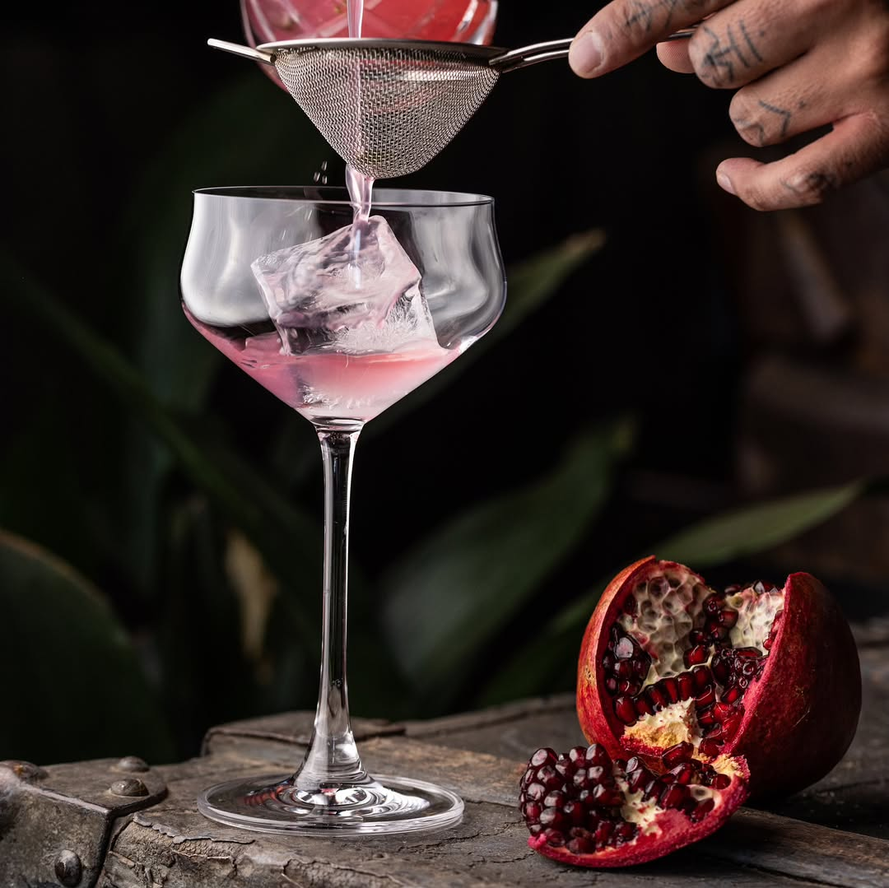
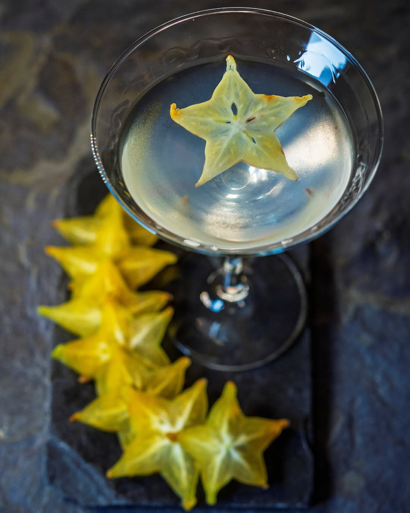

VinoContamos con una gran selección de vinos provenientes de todo el país Coctelería y CerveceríaContamos con una gran variedad de cocteles de autor, elaborados con los mejores ingredientes. También contamos con una amplia selección de cervezas provenientes de todo el país Naturales y Gaseosas



Contamos con una gran variedad de licuados a base de la mejor fruta de temporada, también contamos con una selección de bebidas carbonatadas producidas en el país |